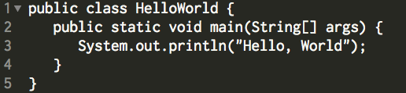
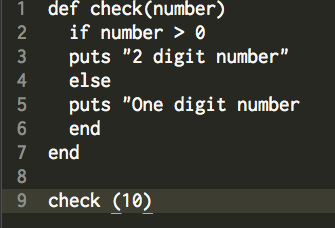

- Blog Posts
- Technical
- VC, Git and Github
- HTML & CSS
- Arrays & Hashes
- Ruby Enumerable Magic
- Intro to Ruby Classes
- FP vs. OOP
- Loops: JS vs. Ruby
- Dynamic vs. Static Typed languages
- Cultural
- DBC warm up
- Abstract Sequential
- Internet & Bias
- Pairing & Feedbacks
- Stereotype Threat
- Values To Live By
- Situations of Conflict
- Cheat Sheets
- SQL
01/15/2015
Dynamic vs. Static Typed Languages
Dynamic Types languages
So far, we have mostly been manipulating Ruby and Javascript, which are both dynamically-typed languages. The main characteristic of dynamically typed, or dynamic languages, is that most of their checks are done at run-time, as opposed to compile-time.
In addition to Javascript and Ruby, examples of dynamic languages include Python, Objective-C, Lisp and Groovy.
Dynamic languages tend to be very popular with programmers, mostly because they are more easy to read and to code. They have less syntactic rules requires, such as punctuation or class declarations, and consequently they require less lines of coding and less meticulousness.
For example, in Ruby, printing the sentence "Hello World" takes only one line:
In Java, writing even the smallest sentence takes 3 lines. For example, adding class declarations ("public class") is required, even if its purpose is not directly relevant to this situation.
Dynamic languages can be more flexible than static ones, because they operate functions based on run-time data. This allows for a more sophisticated checking since it incorporates dynamic as well as run-time information.
However, dynamic languages can also be less practical. Errors can be harder to locate, because the program can find bugs at run-time, sometimes long after the error is actually made. In static languages, which I will explain in more detail in a moment, the error is identified as soon as the data is passed in the wrong place.
The run-time checks of dynamic languages will of course verify that the data is syntactically correct, but will be less efficient in verifying the logic of the source code than a compile-time check.
Another negative aspect of a run-time check is that it only checks for information at the time of the execution of the program. This means that the check will only spot errors for an instance of the program that is run, instead of spotting any potential errors from any possible execution, like a compile-time check would. This makes it therefore more limited, and generally a bit less reliable.
 In the example above (written in Ruby), Ruby will consider this a valid statement and will return the string "2 digit number", even though the else statement is syntactically inaccurate (a bracket is missing).
In Java, the program will immediately return an error even though the else statement isn't executed.
Static Types languages
Static typed languages are called conservative languages, because they do not test for operations at run-time, but only at compile-time.
Examples of such languages incude C, C++, C#, Java and Haskel.
A primary reason why most coders use static-typed languages, instead of using "easier-to-reader-and-code" dynamic languages, is because static languages will not only check for a condition or argument at the time of execution, but will check for all possible instance of the program.
As we saw in the example above, a compile-time check in Java will return a syntax error for this program, even though the else statement isn't evaluated. This is practical because is guarantees that the program will run no matter what, and provides a 'preventative debugging' of sorts.
With dynamic languages, run-time checks can give a false sense of security to the programmer, because even if the code will run with all of the arguments provided at the time of execution, there could be a situation that the programmer didn't predict and forgot to test for, which ends up returning an error when the code eventually goes live.
Consequently, the 'preventative debugging' offered by compile-time checking not only allows many errors to be caught early in the development cycle, but also saves times by eliminating the need for running every possible instance of the program.
-Sam